1. Introduction to Aging Biology#
1.1. Introduction#
It has only (already?!) been 40 years since a new era in ageing research was inaugurated following the isolation of the first long-lived strains of Caenorhabditis elegans (C. elegans) [Klass, 1983]. More and more people are studying ageing hoping to extend the healthy lifespan of humankind. But what is ageing exactly? It is a complex process, which continues throughout the whole life and leads to the death of an individual. It is characterized by a time-dependent decline in functional capacity [López-Otín et al., 2013] and accumulation of molecular damage [Seale et al., 2022]. It is estimated there will be 2.1 billion elderly by 2050 (United Nations, 2017) and age-associated diseases double in cases every 5 years. Also, our unhealthy eating habits are getting worse (Atallah et al., 2018), our physical activity continues to decrease (Fiorito et al., 2019), not to mention pollution impact (Santangelo et al., 2011). There are two major paradigms around ageing: the first one sees ageing as a consequence of a developmental process; for example, some mutations can provide some advantages early in life, but become pathological later in life [Vijg and Dong, 2020]. The second paradigm is ageing resulting from a stochastic process of damage accumulation [Seale et al., 2022]. The common thing between these two theories is cellular and molecular impairments, which are called hallmarks of ageing [López-Otín et al., 2013]. In order to call a biological phenomenon one of the aging hallmarks, it must fulfill the following three criteria:
age-associated manifestation,
experimentally validated impact on these leads to the acceleration of aging,
therapeutic interventions available allowing one to slow, stop, or reverse aging.
Initially there were nine of them, but ten years after the original paper, researchers summarized cutting-edge research findings and added 3 hallmarks: disabled macroautophagy, chronic inflammation, and dysbiosis (Fig. 1.1). All of them are divided into three categories, namely the primary hallmarks that cause the initial damage; the antagonistic hallmarks that are trying to adjust for the primary hallmark-induced damage; and the integrative hallmarks causing ageing phenotypes, which result from damage accumulation caused by the inability of antagonistic hallmarks to balance the primary hallmarks [López-Otín et al., 2023].
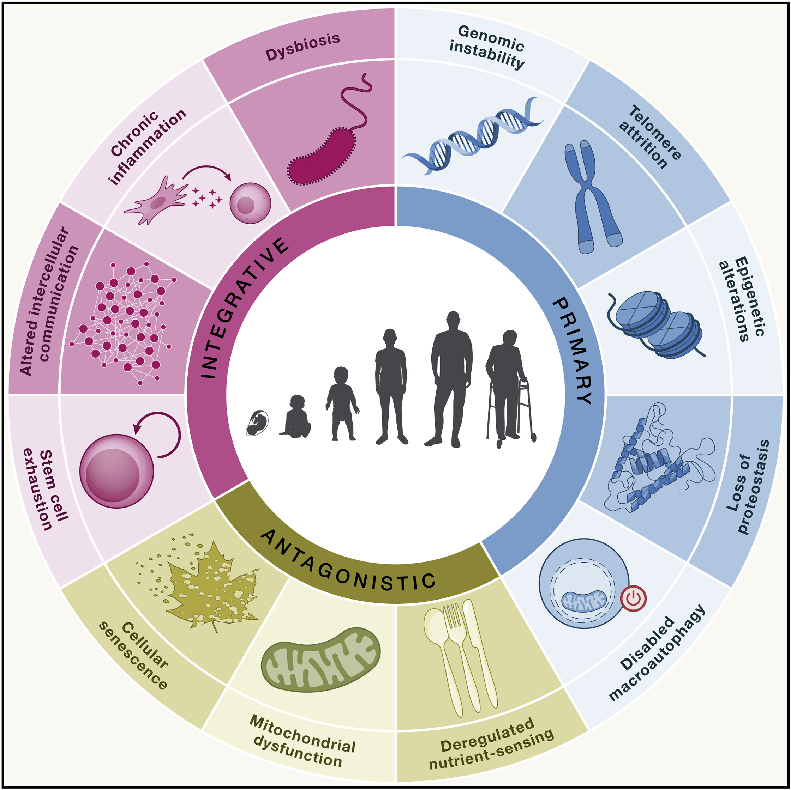
Fig. 1.1 Hallmarks Updated.#
But it is important also to remember what we called PIP of aging hallmarks [López-Otín et al., 2023]:
Part of a complex process - aging has to be conceived as a whole. No hallmark is responsible for all parts of the process. It can be causal for initial damage but then aging becomes avalanche-like.
Interdependence - impact on one hallmark usually affects other hallmarks as well.
Point-of-entry - each hallmark makes future exploration of the aging process possible, as well as the development of new anti-aging medicines primarily affecting this very hallmark
For a quick summary of the initial nine hallmarks, there is a tree-like graph with components of each hallmark in Fig. 1.2.
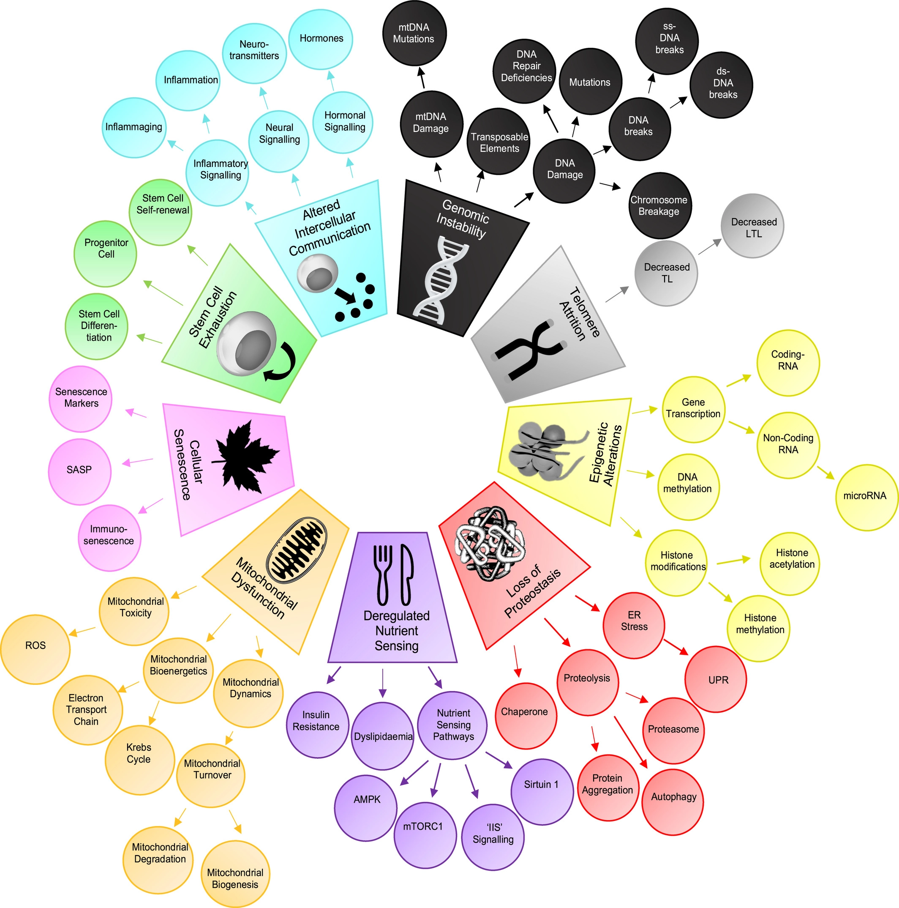
Fig. 1.2 Hallmarks taxonomy.#
1.2. Primary hallmarks#
1.2.1. Genomic instability#
Genomic instability is when the DNA repair system is unable to handle accumulated DNA damage, both exogenous and endogenous (Fig. 1.3).
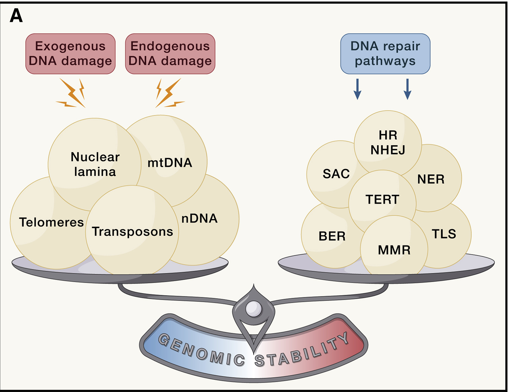
Fig. 1.3 Loss of cellular integrity.#
The whole range of genomic instabilities can be divided into local, such as point mutations, deletions, single- and double-strand breaks, and global, for example, translocations, telomere shortening, chromosomal rearrangements, defects in nuclear architecture, gene disruption caused by integration of viruses or transposons; some of them are shown in Fig. 1.4 [Vijg and Dong, 2020]. Apart from that, there are nuclear genome instabilities and mitochondrial instabilities.
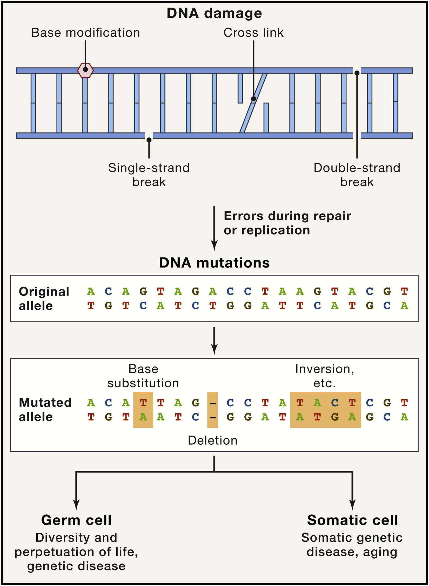
Fig. 1.4 Causes and Consequences of Somatic DNA Mutations.#
Some of the models to create a causal link between accumulated genomic damage and aging are mice with deficiencies in DNA repair mechanisms, that age faster. It was also shown that errors in DNA repair mechanisms are one of the causes of several human progeroid syndromes, such as Werner syndrome, Bloom syndrome, xeroderma pigmentosum, trichothiodystrophy, Cockayne syndrome, and Seckel syndrome (Gregg et al., 2012; Hoeijmakers, 2009; Murga et al., 2009). There is also evidence that species-specific somatic mutation rate is inversely correlated with lifespan [Cagan et al., 2022]; the resulting model is shown in Fig. 1.5.
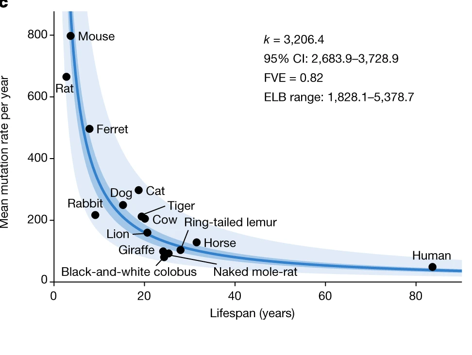
Fig. 1.5 Mutation and lifespan#
1.2.1.1. Evolutionary role of mutations#
But why is the repair system unable to handle DNA damage? The first thing is that the efficiency of repair declines with age [Miller et al., 2021], so the DNA repair machinery is unable to handle DNA damage. But the second reason is that somatic mutagenesis plays important roles in development and may be beneficial early in life. For example, a recent paper [Mangan et al., 2022] demonstrated the role of “human ancestor quickly evolved regions” (HAQERs) in hominin divergence from the human-chimpanzee ancestor (HCA). According to the findings, these regions have elevated mutation rates and undergo positive selection. Due to that, HAQERs obtained both hominin-unique enhancers involved in the development of the cerebral cortex and variants that are linked to a range of human-specific diseases such as neuroblastoma, bipolar disorder and schizophrenia. Another example is somatic hypermutation in the immune system. This phenomenon is involved in the production of highly specific antibodies through accumulation of point mutations at a very high rate in the V-regions of the immunoglobulin-coding genes of B lymphocytes [Odegard and Schatz, 2006].
1.2.1.2. How mutations accumulate#
The main question remains how a single mutation inside one cell can cause such damage? There are three interrelated mechanisms [Vijg and Dong, 2020] addressing this question (Fig. 1.6):
Clonal expansion - cells with a mutation can become a substantial percentage of all cells in the tissue (blue cells in Fig. 1.6). If the mutation is associated with Mendelian diseases, their effects may be even greater.
Somatic evolution - de novo mutations lead to more mutations, which may result in the loss of proliferative homeostasis, which is maintaining balance between growth and genomic stability (orange and yellow cells in Fig. 1.6). Such selfish mutations can form substantial clonal lineages and lead to cancer and other age-related diseases.
Mutations inside functional elements could disrupt the gene regulatory networks causing altered gene expression of the whole system.
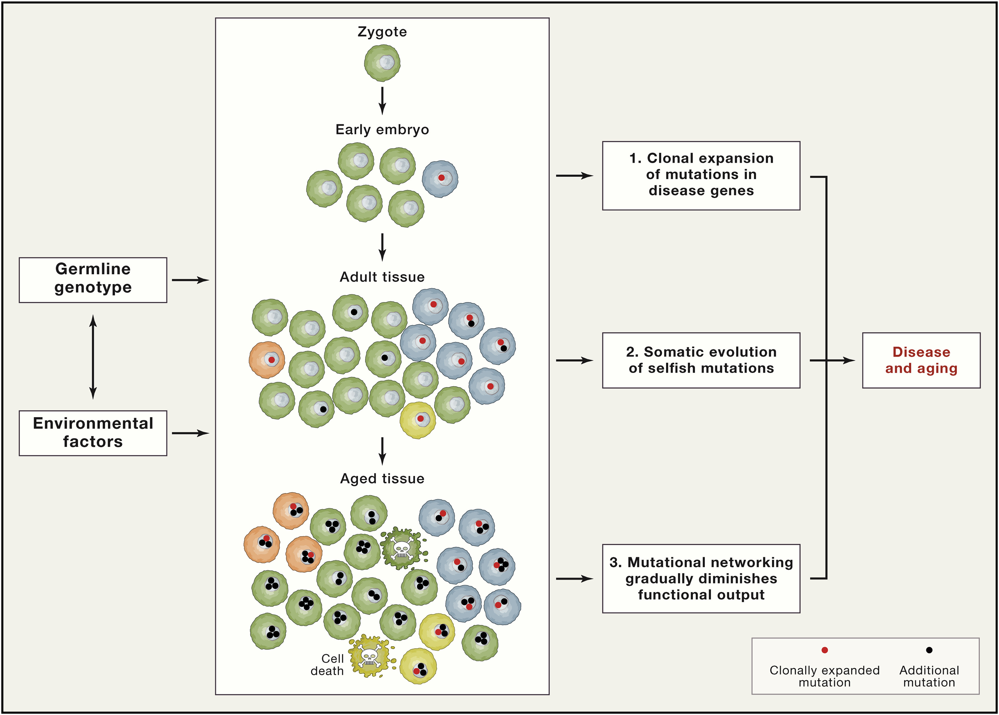
Fig. 1.6 Pathogenic mosaicism#
Mutations undergoing clonal expansion and those under somatic evolution create transcriptional noise due to the stochastic manner of somatic mosaicism (Fig. 1.7). One of the models regarding how mutations can affect gene transcription is transcriptional stress [Gyenis et al., 2023], summarized in Fig. 1.8.
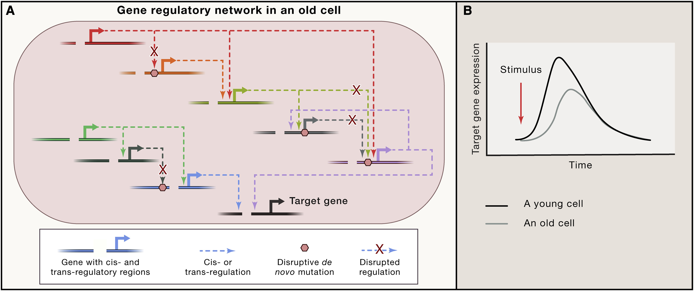
Fig. 1.7 Mutation affects gene regulatory network#
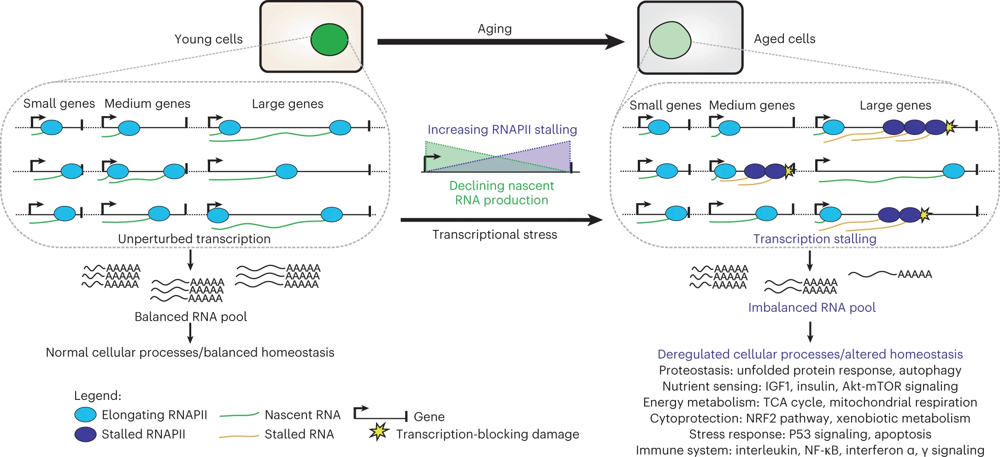
Fig. 1.8 Transcriptional stress#
Mitochondrial DNA instability is somewhat similar to nuclear DNA instability, but there are some differences as well. There are many mitochondria per cell, and their mtDNA has a high replicative index. They have an oxidative microenvironment due to their role inside the cell, and they have no protective histone molecules on their DNA (probably due to their bacterial origin). Contrary to common beliefs, some findings suggest that most mtDNA mutations in aged cells arise from replication errors caused by mtDNA polymerase gamma rather than from oxidative stress [López-Otín et al., 2023].
DNA damage could indirectly lead to chronic inflammation due to the creation of cytoplasmic chromatin fragments (CCF), which are parts of chromatin that migrated to the cytoplasm, along with mtDNA escaped from dysfunctional mitochondria and cDNA emerged from transposons reactivation (Fig. 1.9) (more on the latter in the Epigenetic alterations section).
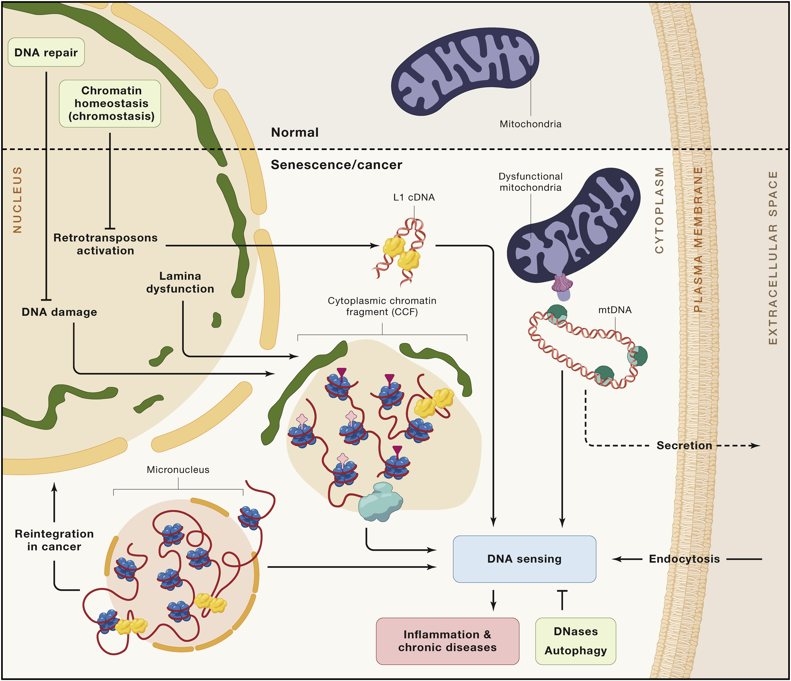
Fig. 1.9 Cytosolic DNA and aging#
1.2.2. Telomere shortening#
Mammalian telomeres consist of a tandem repetitive nucleotide sequence, which is TTAGGG, measuring several to tens of kilobases and terminating at the 3′ end in a single-stranded 75 to 300-nt overhang enriched in guanine nucleotides, which form a cap structure that functions to maintain the integrity of chromosomes (Fig. 1.10).
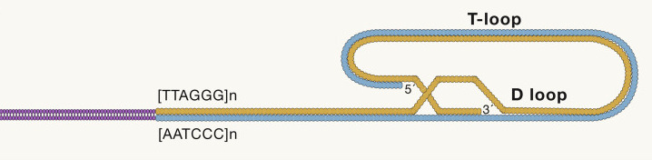
Fig. 1.10 telomere-structure#
The PGC-1alpha pathway is a signaling pathway that links telomere and mitochondrial dysfunction (Fig. 1.11). PGC-1alpha is a transcriptional co-activator that is involved in regulating many cellular processes, including energy metabolism, mitochondrial biogenesis, and stress resistance. The PGC-1alpha pathway has been found to be dysregulated in age-related diseases, such as Alzheimer’s disease, Parkinson’s disease, and type 2 diabetes. Studies have shown that PGC-1alpha activation can help to protect against age-related diseases and may even be able to slow down the aging process itself.
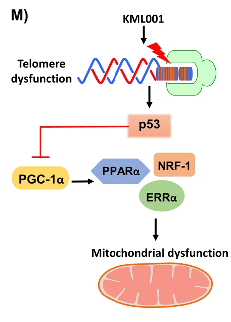
Fig. 1.11 PGC-1alpha pathway links telomere and mitochondrial dysfunction#
1.2.3. Epigenetic alterations#
Epigenetics is a way to regulate gene expression via posttranslational histone modifications, DNA methylation, non-coding RNA and chromatin remodeling (the latter is sometimes separated from epigenetics into chromatin folding). A lot of proteins are involved in gene regulation: enzymes, such as DNA methyltransferases, histone deacetylases; chromatin remodellers, ncRNA-processing enzymes, histones themselves etc. Epigenetic modifications can lead to changes in gene expression, which can influence many age-related processes, such as cell senescence, DNA damage, and oxidative stress.
Most aging epigenetic changes are associated with reactivation of silenced regions: decreased global DNA methylation levels, active histone acetylase enzymes, heterochromatin relaxation, transposons derepression. It is important to note that epigenetic alterations mediate effects of several well-known pathways involved in ageing; for example, histone demethylases affect the insulin/insulin growth factor-1 (IGF-1) signaling pathway, and members of the SIRT family are histone deacetylases.
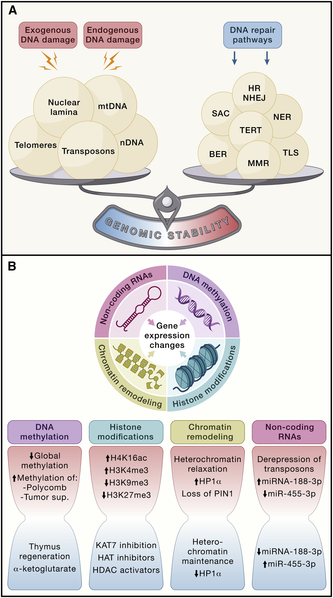
Fig. 1.12 Loss of cellular integrity as a result of excessive DNA damage, failure of DNA repair mechanisms or epigenetic alterations#
1.2.3.1. DNA methylation#
DNA methylation is a process in which methyl groups are added to DNA, mainly at promoter regions, which mostly leads to DNA silencing.
The majority of age-related changes in DNA methylation affect introns and intergenic regions, including those of several tumor suppressor genes and Polycomb target genes. Epigenetic clocks based on DNA methylation status at selected sites have been introduced to predict chronological age and mortality risk, as well as to evaluate interventions that may extend human lifespan.
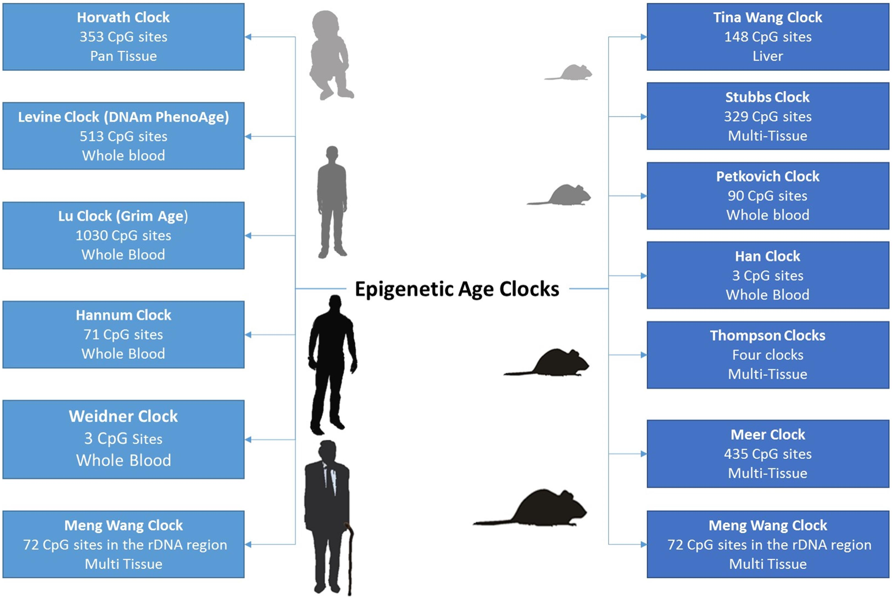
Fig. 1.13 Examples of DNA methylation clocks#
1.2.3.2. Heterochromatin#
Heterochromatin is a type of tightly packed DNA that is associated with gene silencing. It has been suggested that heterochromatin may play a role in aging by increasing the rate of epigenetic alterations, which can lead to age-related diseases. Additionally, heterochromatin has been linked to telomere-mitochondrial dysfunction and the PGC-1alpha pathway of aging, suggesting a potential role in the aging process.
Mutations or aberrant DNA methylation (along with many other factors) can trigger heterochromatin loss, so that previously silenced regions start to be transcribed.
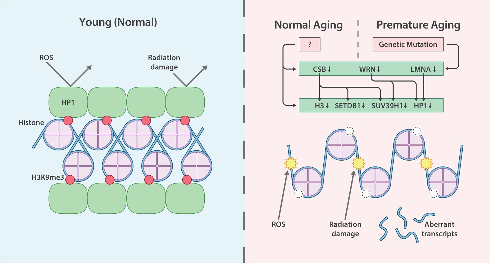
Fig. 1.14 Heterochromatin changes and aging#
1.2.3.3. Transposons reactivation#
Heterochromatin loss leads to transposon reactivation; active transposons can migrate to other cells causing senescence, transposons in the cytoplasm can promote inflammation, and transposons can integrate into new locations inside the genome.
Retrotransposons consist of long interspersed nuclear elements (LINEs), which encode the required proteins for retrotransposition, and SINEs, which are short, non-coding RNAs that hijack the LINE protein machinery. Retrotransposons are reactivated in senescent cells and during the lifetime and generate deleterious effects through genetic and epigenetic changes or by activation of immune pathways triggered after identification of retrotransposon nucleic acids as foreign DNA.
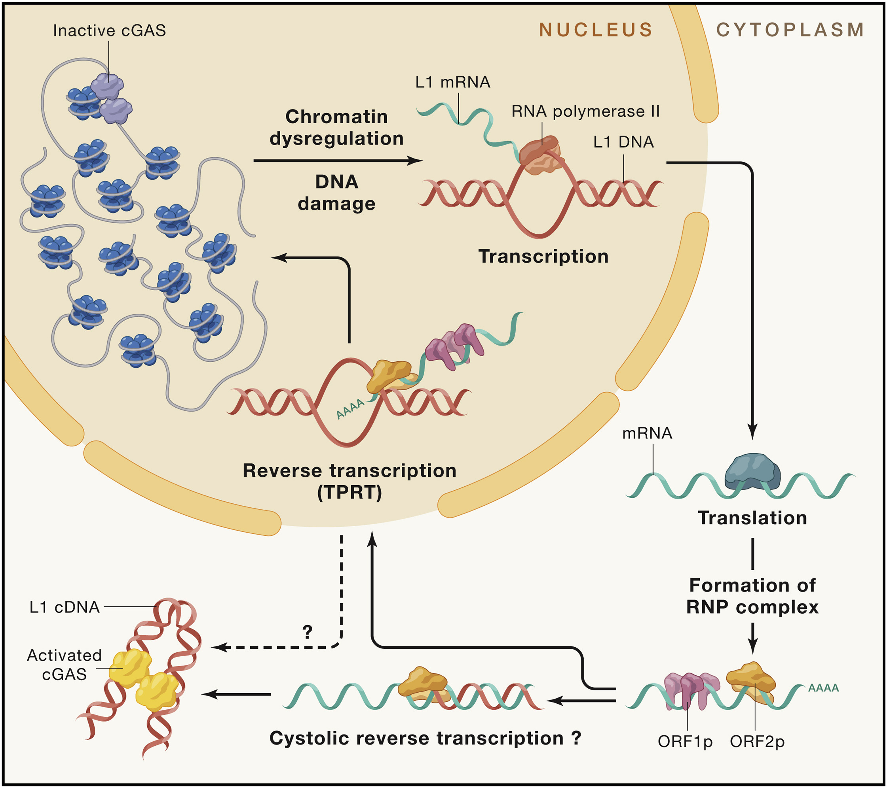
Fig. 1.15 Mechanisms of retrotransposon activation#
1.2.4. Loss of proteostasis#
Intracellular proteostasis can be disrupted due to the enhanced production of erroneously translated, misfolded or incomplete proteins. Another mechanism driving the collapse of the proteostasis network resides in slowed translation elongation and cumulative oxidative damage of proteins, increasingly distracting the chaperones from folding healthy proteins required for cellular fitness. In addition, numerous age-related neurodegenerative diseases including ALS and Alzheimer’s disease can be caused by mutations in proteins that render them intrinsically prone to misfolding and aggregation, hence saturating the mechanisms of protein repair, removal, and turnover that are required for maintenance of the healthy state.
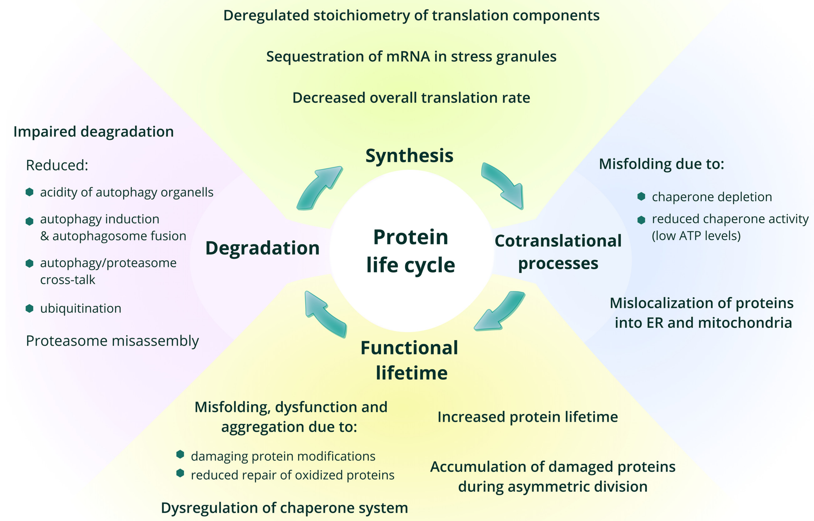
Fig. 1.16 Role of protein synthesis in aging#
1.2.5. Disabled autophagy#
Macroautophagy is characterized by capturing cytoplasmic material into the autophagosomes, which later fuse with lysosomes for the digestion of its content. It is not only involved in proteostasis but also affects non-proteinaceous macromolecules (ectopic cytosolic DNA, lipid vesicles, and glycogen) and entire organelles (mitophagy, lysophagy, reticulophagy, pexophagy), as well as invading pathogens (xenophagy). Moreover, autophagy is a highly selective cellular pathway that is associated with tissue and cellular homeostasis. Selective autophagy can be further divided into many subtypes on the basis of the specific cargos involved. These subtypes target various macromolecules (glycophagy and lipophagy) (Fig. 1.17, pathways (2)–(5)), mitochondria (mitophagy) (Fig. 1.17, pathway (6)), the endoplasmic reticulum (ER) (ER-phagy) (Fig. 1.17, pathway (7)), parts of the nucleus (nucleophagy) (Fig. 1.17, pathway (8)), pathogens (xenophagy) (Fig. 1.17, pathway (9)) and lysosomes themselves (lysophagy) (Fig. 1.17, pathway (10)).
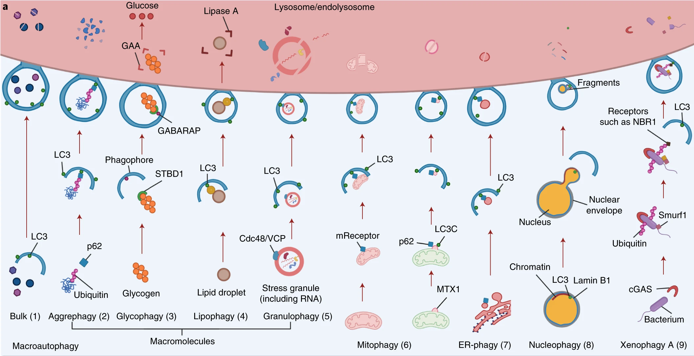
Fig. 1.17 Different mechanisms of autophagy#
It is shown that expression of autophagy-related genes declines with age, and so does the efficiency of autophagy. Moreover, genetic inhibition of autophagy accelerates the aging process in model organisms. Conversely, CD4+ T-lymphocytes isolated from people with exceptional longevity show enhanced autophagic activity compared with age-matched controls, which highlights the importance of this process in ageing. Reduction of autophagic flux may participate in the accumulation of protein aggregates and dysfunctional organelles, reduced elimination of pathogens, and enhanced inflammation because autophagy eliminates proteins involved in the inflammasome and their upstream triggers. Also, autophagy apparently acts as a tumor-suppressive mechanism, which may involve cell-autonomous processes and cancer immunosurveillance.
Clinical trials have demonstrated the efficacy of NAD+ precursors in the chemoprevention of non-melanoma skin cancer, in reversing insulin resistance in prediabetic women, and in reducing neuroinflammation in patients with Parkinson’s disease.
1.3. Antagonistic hallmarks#
1.3.1. Cellular senescence#
Cellular senescence is characterized by stable proliferative arrest mediated by the activation of the tumor suppressors TP53 and CDKN2A/p16, and their downstream effectors CDKN1A/p21 and retinoblastoma-1 (RB1) family proteins, respectively.
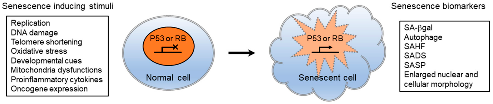
Fig. 1.18 Senescence-inducing stimuli and biomarkers#
Senescent cells secrete a number of pro-inflammatory and pro-fibrotic factors, and if a senescent cell is not eliminated by immune cells, it can lead to chronic inflammation and progressive fibrosis. The SASP has many different consequences for the microenvironment: (1) to recruit and activate immune cells through the secretion of chemokines (CCL2, CXCL2, and CXCL3) and cytokines (IL-18, IL-2, IL-6, and IL-8); (2) to suppress the immune system through the secretion of TGF-beta; (3) to trigger fibroblast activation and collagen deposition through pro-fibrotic factors (TGF-B, IL-11, and PAI1); (4) to remodel the ECM through the secretion of matrix metalloproteases; (5) to trigger the activation and proliferation of progenitor cells through the secretion of growth factors (EGF and PDGF); and (6) to trigger paracrine senescence in neighboring cells (TGF-beta, TNF-alpha, and IL-8).
Moreover, the SASP can cause depletion of lamin B1. This results in the loss of lamin-associated heterochromatin and de novo formation of heterochromatin rich in H3K9me3, a process that can be visualized as HP1a foci or senescence-associated heterochromatin foci (SAHFs). This culminates in the transcriptional derepression of endogenous retroviruses, most notably LINE-1, which causes cytosolic leakage of double-stranded DNA and activates the cGAS/STING and TLR pathways.
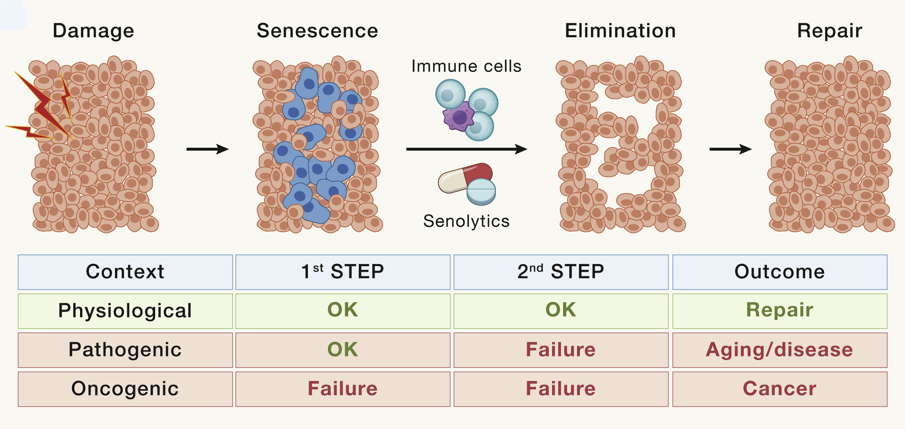
Fig. 1.19 Cellular senescence#
1.3.2. Disrupted nutrient signaling#
The nutrient-sensing network is highly conserved in evolution. It includes extracellular ligands, such as insulins and IGFs, the receptor tyrosine kinases with which they interact, as well as intracellular signaling cascades. These cascades involve the PI3K-AKT and the Ras-MEK-ERK pathways, as well as transcription factors, including FOXOs and E26 factors, which transactivate genes involved in diverse cellular processes. The mechanistic target of rapamycin (mTOR) complex-1 (MTORC1) [Crino, 2016] responds to nutrients, including glucose and amino acids, and to stressors such as hypoxia and low energy to modulate the activity of numerous proteins including transcription factors such as SREBP and TFEB. This network is a central regulator of cellular activity, including autophagy, mRNA and ribosome biogenesis, protein synthesis, glucose, nucleotide and lipid metabolism, mitochondrial biogenesis, and proteasomal activity. Network activity responds to nutrition and stress status by activating anabolism if nutrients are present and stress is low or by inducing cellular defense pathways in response to stress and nutrient-shortage.
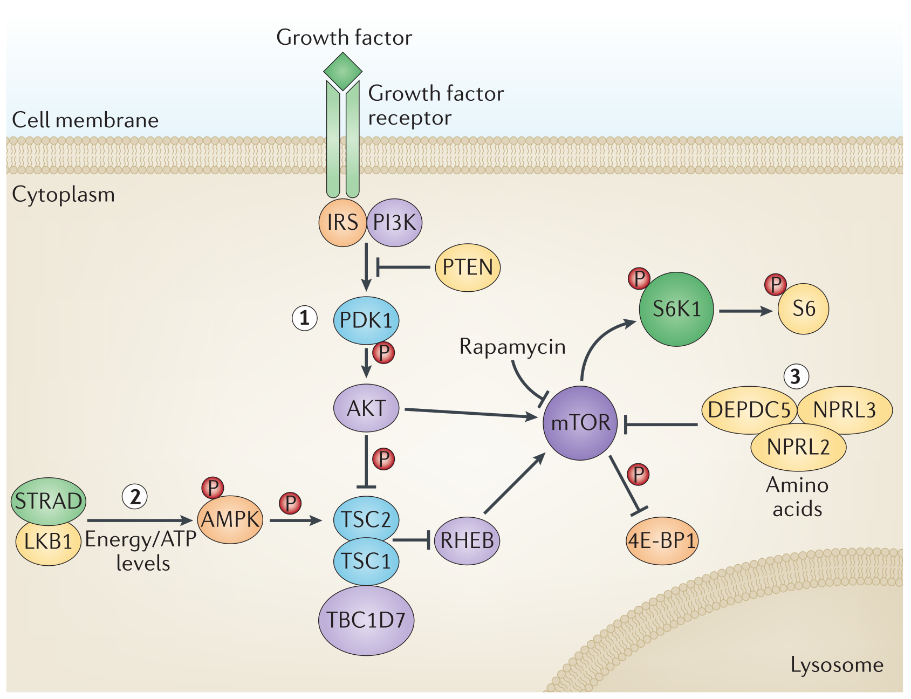
Fig. 1.20 mTOR pathway is one of the most important pathways when studying aging#
Diet is one of the most practical targets for interventions into human aging. Mechanistically, overnutrition: (1) triggers intracellular nutrient sensors, such as MTORC1 (activated by leucine and other amino acids), and the acetyltransferase EP300 (activated by acetyl coenzyme A); (2) inhibits sensors that detect nutrient scarcity, such as AMP-activated kinase (AMPK) and the deacetylases SIRT1 and SIRT3 (which respond to NAD”); and (3) abolishes catabolic reactions (glycogenolysis, proteolysis for gluconeogenesis, and lipolysis coupled to ketogenesis) with consequent suppression of adaptive cellular stress responses, including autophagy, antioxidant defense, and DNA repair. Conversely, fasting and dietary restriction inhibit MTORC1 and EP300; activate AMPK, SIRT1, and SIRT3; and stimulate adaptive cellular stress responses as they suppress the somatotrophic axis and extend longevity in multiple model organisms including primates.
1.3.3. Mitochondrial dysfunction: oxidant stress#
Mitochondrial function declines, leading to diminished energy (ATP) production as well as increased intracellular ROS.
Model: Direct evidence of a role for mitochondrial decline in driving processes of ageing derives from mice harboring mutations in the mitochondrial DNA polymerase subunit gamma (POLG). These mutant mice show reduced mitochondrial abundance and abnormal mitochondrial morphology (e.g., fragmented cristae and disrupted external membrane; Trifunovic et al., 2004) and exhibit premature ageing (e.g., alopecia, kyphosis, reduced body weight, reduced subcutaneous fat, reduced bone mineral density consistent with osteoporosis, anemia, and cardiomyopathy). Notably, the premature ageing phenotypes associated with mitochondrial dysfunction mirror those of telomerase-deficient mice, p53-hyperactivated mice (Tyner et al., 2002), and PGC1a/ b-null mice (Lai et al., 2008).
1.4. Integrative hallmarks#
1.4.1. Stem cell exhaustion#
Aging is associated with reduced tissue renewal at steady state, as well as with impaired tissue repair upon injury, which rely to a large extent on injury-induced cellular de-differentiation and plasticity.
Cellular reprogramming toward pluripotency consists in the conversion of adult somatic cells into embryonic pluripotent cells (known as induced pluripotent stem cells or iPSCs) by the concomitant action of four externally transduced transcription factors, namely, OCT4, SOX2, KLF4, and MYC (OSKM). Full reprogramming not only implies a change of cellular identity but also cellular rejuvenation, characterized by a number of aging features that are reset to the embryonic state, as indicated by p16 reduction, extension of telomeres, and resetting of the DNA methylation clock. Interestingly, rejuvenation occurs in a progressive fashion starting shortly after the initiation of de-differentiation. Indeed, it is possible to initiate reprogramming with OSKM, interrupt the process at an intermediate state, and allow cells to return to their original identity. This transient cellular perturbation, variously known as “partial,” “transient,” or “intermediate” reprogramming, is able to rejuvenate cellular markers of aging such as the DNA methylation clock, DNA damage, epigenetic patterns, and aging-associated changes in the transcriptome, both in vitro and in vivo, and recapitulates features of natural tissue repair.
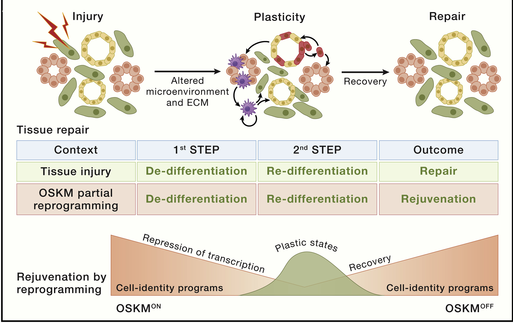
Fig. 1.21 Stem cell exhaustion#
1.4.2. Altered intercellular signaling#
Aging is coupled to progressive alterations in intercellular communication that increase the noise in the system and compromise homeostatic and hormetic regulation. Although the primary causes of such alterations are cell intrinsic, as this is particularly well documented for the SASP, these derangements in intercellular communication ultimately sum up to a hallmark on its own that bridges the cell-intrinsic hallmarks to meta-cellular hallmarks including the chronification of inflammatory reactions coupled to the decline of immunosurveillance against pathogens and premalignant cells, as well as the alterations in the bidirectional communication between the human genome and the microbiome, which finally results in dysbiosis.
It was noted that a single transfusion of old blood induces features of aging in young mice within a few days, and the simple dilution of the blood of old mice with saline buffer containing 5% albumin induces rejuvenation in multiple tissues, indicating the existence of circulating factors that favor the aging process. Among the pro-aging blood-borne factors, the chemokine CCL11/eotaxin and the inflammation-related protein p2-microglobulin reduce neurogenesis, IL-6 and TGF-beta impair hematopoiesis, and the complement factor C1q compromises muscle repair. Theoretically, the neutralization of these factors might have potent anti-aging effects.
1.4.3. Chronic inflammation#
Inflammation increases during aging (“inflammaging”) with systemic manifestations, as well as with pathological local phenotypes including arteriosclerosis, neuroinflammation, osteoarthritis, and intervertebral discal degeneration. Accordingly, the circulating concentrations of inflammatory cytokines and biomarkers (such as CRP) increase with aging. Elevated IL-6 levels in plasma constitute a predictive biomarker of all-cause mortality in aging human populations.
Inflammaging occurs as a result of multiple derangements that stem from all the other hallmarks. For example, inflammation is triggered by the translocation of nuclear and mtDNA into the cytosol where it stimulates pro-inflammatory DNA sensors, especially when autophagy is ineffective and hence unable to intercept ectopic DNA. Genomic instability favors clonal hematopoiesis of indeterminate potential (CHIP), with the expansion of myeloid cells that often bear a pro-inflammatory phenotype, driving for instance cardiovascular aging.
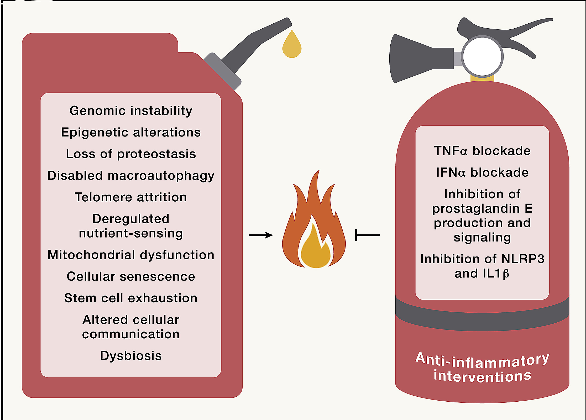
Fig. 1.22 Inflammaging#
Overexpression of pro-inflammatory proteins can be secondary to epigenetic dysregulation, deficient proteostasis, or disabled autophagy. Excessive trophic signals resulting in activation of the GH/IGF1/PI3K/AKT/mTORC1 axis trigger inflammation. In addition, inflammation is favored by the SASP secondary to the accrual of senescent cells, as well as by the accumulation of extracellular debris and infectious pathogens, which are not cleared due to senescence, and by exhaustion of myeloid and lymphoid cells. Finally, inflammaging is also exacerbated by perturbations of circadian rhythms and by intestinal barrier dysfunction.
1.4.4. Dysbiosis#
Over recent years, the gut microbiome has emerged as a key factor in multiple physiological processes such as nutrient digestion and absorption, protection against pathogens, and production of essential metabolites including vitamins, amino acid derivatives, secondary bile acids, and short-chain fatty acids (SCFAs). The intestinal microbiota also signals to the peripheral and central nervous systems and other distant organs and strongly impacts on the overall maintenance of host health.
Disruption of this bacteria-host bidirectional communication results in dysbiosis and contributes to a variety of pathological conditions, such as obesity, type 2 diabetes, ulcerative colitis, neurological disorders, CVDs, and cancer. The progress in this field has generated an enormous interest in exploring gut microbiota alterations in aging.
The microbial community within the intestinal tract is highly variable among individuals as a consequence of host genetic variants (ethnicity), dietary factors, and lifestyle habits (culture), as well as environmental conditions (geography), which makes it difficult to unveil the relationships between microbiota and pleiotropic age-associated disease manifestations. Nonetheless, some meta-analyses have revealed microbiota-disease associations that have been validated across distinct pathologies. Once bacterial diversity is established during childhood, it remains relatively stable during adulthood. However, the architecture and activity of this bacterial community undergo gradual changes during aging, finally leading to a general decrease in ecological diversity.
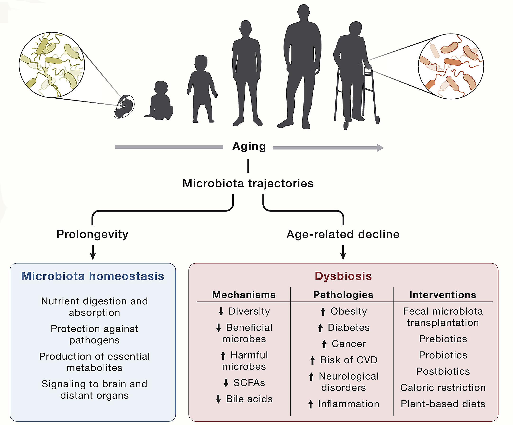
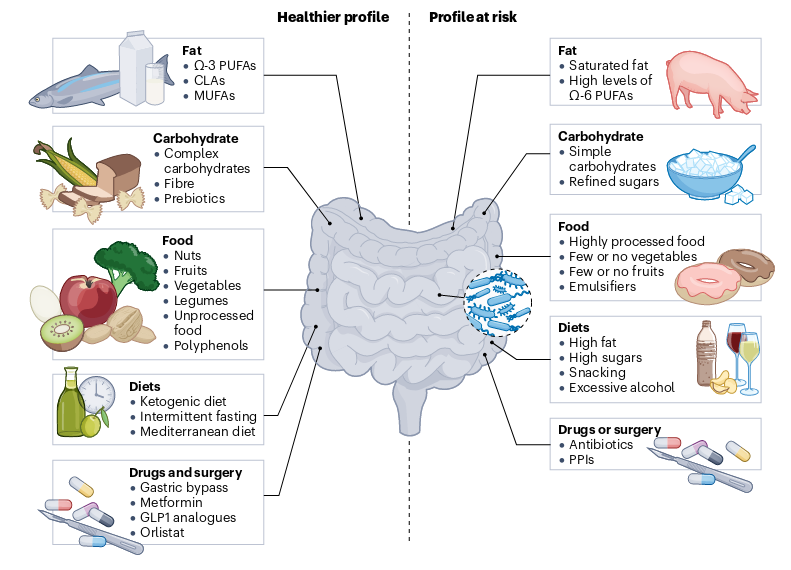
Fig. 1.23 Factors influencing the gut microbiota#
1.5. Conclusions#
All the 12 hallmarks of aging are strongly related to each other. For example, genomic instability (including that caused by telomere shortening) crosstalks to epigenetic alterations (e.g., through the loss-of-function mutation of epigenetic modifiers such as TET2), loss of proteostasis (e.g., due to the production of mutated, misfolded proteins), disabled macroautophagy (e.g., through the capacity of autophagy to remove supernumerary centrosomes, extranuclear chromatin, and cytosolic DNA), deregulated nutrient-sensing (e.g., because SIRT6 is an NAD+ sensor involved in DNA repair but also responding to nutrient scarcity), mitochondrial dysfunction (e.g., due to the mutation of mtDNA), cellular senescence (e.g., because DNA damage triggers senescence), altered intercellular communication (e.g., by hampering activation of communication pathways), chronic inflammation (e.g., because CHIP and leakage of DNA into the cytosol induce inflammation), and dysbiosis (e.g., because mutations in intestinal cells favor dysbiosis, whereas specific microbial proteins and metabolites act as mutagens). Similar functional relationships can be listed for most if not all hallmarks of aging, illustrating their formidable interconnectivity.
Aging is not yet a recognized target for drug development or for treatment. For this reason, the first clinical trials evaluating antiaging interventions must deal with the prevention or mitigation of age-associated pathologies rather than aging itself. Although such trials have been designed to target high-risk populations (such as patients with myocardial infarction and laboratory signs of inflammation in the CANTOS trial or patients with frailty or cardiovascular events to be enrolled in future metformin-related trials) and to measure the manifestation of a second cardiovascular event or aggravation of frailty, there is a risk that they are programmed too late, which is of significant concern. Indeed, at this point, academic geroscience may rise or fall as a function of the outcome of the first randomized, double-blinded phase 3 trials. The new directions of the hallmarks of aging may provide an improved framework for the development of effective interventions aimed at the extension of healthy longevity.
1.6. Credits#
This text was prepared by Irina Zhegalova.
1.7. References#
Alex Cagan, Adrian Baez-Ortega, Natalia Brzozowska, Federico Abascal, Tim H. H. Coorens, Mathijs A. Sanders, Andrew R. J. Lawson, Luke M. R. Harvey, Shriram Bhosle, David Jones, Raul E. Alcantara, Timothy M. Butler, Yvette Hooks, Kirsty Roberts, Elizabeth Anderson, Sharna Lunn, Edmund Flach, Simon Spiro, Inez Januszczak, Ethan Wrigglesworth, Hannah Jenkins, Tilly Dallas, Nic Masters, Matthew W. Perkins, Robert Deaville, Megan Druce, Ruzhica Bogeska, Michael D. Milsom, Björn Neumann, Frank Gorman, Fernando Constantino-Casas, Laura Peachey, Diana Bochynska, Ewan St John Smith, Moritz Gerstung, Peter J. Campbell, Elizabeth P. Murchison, Michael R. Stratton, and Iñigo Martincorena. Somatic mutation rates scale with lifespan across mammals. Nature, 604(7906):517–524, April 2022. doi:10.1038/s41586-022-04618-z.
Peter B. Crino. The mTOR signalling cascade: paving new roads to cure neurological disease. Nature Reviews Neurology, 12(7):379–392, 2016. doi:10.1038/nrneurol.2016.81.
Akos Gyenis, Jiang Chang, Joris J. P. G. Demmers, Serena T. Bruens, Sander Barnhoorn, Renata M. C. Brandt, Marjolein P. Baar, Marko Raseta, Kasper W. J. Derks, Jan H. J. Hoeijmakers, and Joris Pothof. Genome-wide RNA polymerase stalling shapes the transcriptome during aging. Nat Genet, pages 1–12, January 2023. doi:10.1038/s41588-022-01279-6.
Michael R. Klass. A method for the isolation of longevity mutants in the nematode Caenorhabditis elegans and initial results. Mechanisms of Ageing and Development, 22(3):279–286, July 1983. doi:10.1016/0047-6374(83)90082-9.
Carlos López-Otín, Maria A Blasco, Linda Partridge, Manuel Serrano, and Guido Kroemer. The hallmarks of aging. Cell, 153(6):1194–1217, 2013.
Riley J. Mangan, Fernando C. Alsina, Federica Mosti, Jesús Emiliano Sotelo-Fonseca, Daniel A. Snellings, Eric H. Au, Juliana Carvalho, Laya Sathyan, Graham D. Johnson, Timothy E. Reddy, Debra L. Silver, and Craig B. Lowe. Adaptive sequence divergence forged new neurodevelopmental enhancers in humans. Cell, 185(24):4587–4603.e23, November 2022. doi:10.1016/j.cell.2022.10.016.
Karl N. Miller, Stella G. Victorelli, Hanna Salmonowicz, Nirmalya Dasgupta, Tianhui Liu, João F. Passos, and Peter D. Adams. Cytoplasmic DNA: sources, sensing, and role in aging and disease. Cell, 184(22):5506–5526, October 2021. doi:10.1016/j.cell.2021.09.034.
Valerie H. Odegard and David G. Schatz. Targeting of somatic hypermutation. Nature Reviews Immunology, 6(8):573–583, August 2006. doi:10.1038/nri1896.
Kirsten Seale, Steve Horvath, Andrew Teschendorff, Nir Eynon, and Sarah Voisin. Making sense of the ageing methylome. Nature Reviews Genetics, 23(10):585–605, 2022.
Jan Vijg and Xiao Dong. Pathogenic Mechanisms of Somatic Mutation and Genome Mosaicism in Aging. Cell, 182(1):12–23, July 2020. doi:10.1016/j.cell.2020.06.024.
Carlos López-Otín, Maria A. Blasco, Linda Partridge, Manuel Serrano, and Guido Kroemer. Hallmarks of aging: An expanding universe. Cell, 186(2):243–278, 2023. doi:10.1016/j.cell.2022.11.001.